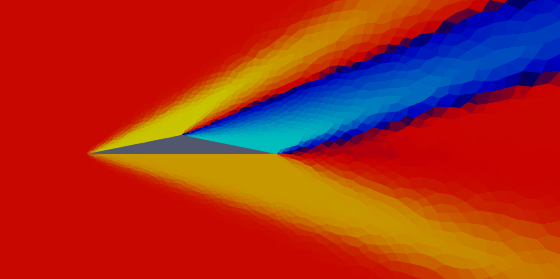
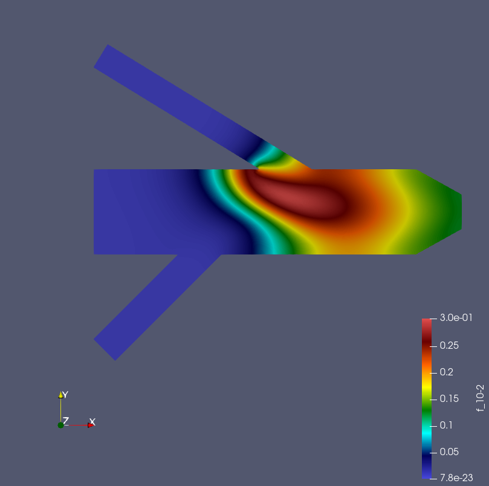

流体シミュレーションへの理解
現在シミュレーションはさまざまな分野の開発の現場において欠かせないものとなっている。しかしながらシミュレーションにはさまざまな制約があり、得られた結果の正しさは前提条件に強く依存する。
私はシュトゥットガルトの大学で流体数値解析で用いられる主な3つの手法（有限差分法(FDM),有限要素法(FEM),有限体積法(FVM))を学習し、また簡単な問題に対して実際に実装した。
有限差分法
有限差分法はもっとも単純な計算手法であり、それへの理解はより発展した数値計算手法を理解する根底となる。私は、温度の高い流体が冷たい金属板に触れた時の温度分布のシミュレーションをゼロから実装した。(定常状態に達するには非常に長い時間がかかるため、以下のGif画像は定常状態になる前に終了させている。)

有限要素法
有限要素法は構造物やマッハ数の低い流体に用いられる手法である。FEniCSは大学や研究所が共同開発した有限要素法のパッケージであり、Pythonのインターフェイスを用いて支配方程式や境界条件を直接入力することでシミュレーションを行うことができる。計算に用いる要素の種類も非常に多種多様であり、問題の特徴に応じた手法を選択できる。
下図では二つの物質A・Bの化学反応によって生じた物質Cの分布をシミュレーションしている。
有限体積法
有限体積法は保存量に注目して計算する手法であり、衝撃波など有限差分法・有限要素法では計算が難しい/不可能な問題にも応用できる。ゆえに航空分野で用いられる数値流体シミュレーションの多くの場合でこの手法が用いられる。私はさまざまなnumerical fluxの計算手法や境界条件、空間・時間の離散化と解法をFortranにで実際に実装し、その挙動を確かめた。
下のgif画像は円筒の周りを流れる流体をナビエストークス方程式を用いて計算している。ストークス方程式やポテンシャル流れでは現れないカルマン渦が発生していることが確認できる。